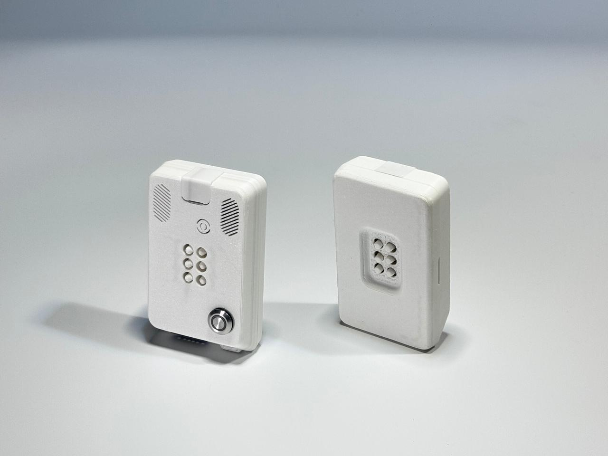

Diseño inclusivo · Fabricación digitalInclusive design · Digital fabrication
Entrenador Braille.
Aprender con las manos.Braille Trainer.
Learning through touch.
Un dispositivo portátil con retroalimentación táctil y sonora, diseñado para apoyar el aprendizaje inicial del Braille en niños con discapacidad visual.A portable device with tactile and audio feedback, designed to support early Braille learning for children with visual impairments.
Proyecto de Marcela Gonzales Arias
Maestría en Diseño Interactivo · FADU–UBAA project by Marcela Gonzales Arias
Master’s in Interactive Design · FADU–UBA

El proyectoThe project
Diseño para apoyar el aprendizaje.Design to support learning.
El Entrenador Braille nace de una investigación de diseño interactivo sobre el aprendizaje inicial del Braille en niños con discapacidad visual. Combina interacción táctil, respuesta sonora y fabricación digital, con documentación para comprender y replicar el dispositivo.Braille Trainer grew out of interactive design research into early Braille learning for children with visual impairments. It combines tactile interaction, audio feedback and digital fabrication, with documentation to help others understand and replicate the device.